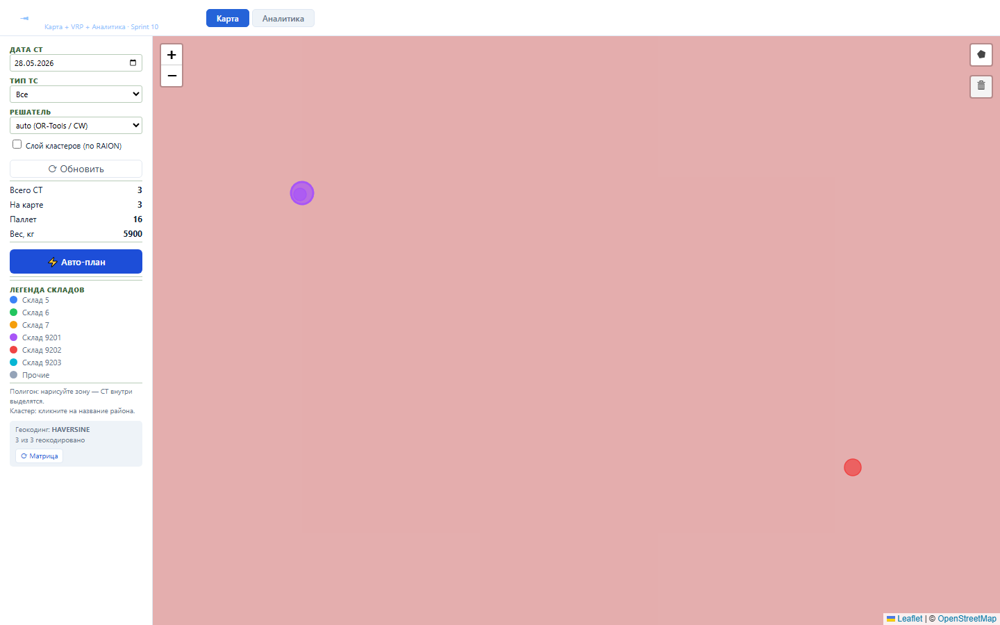
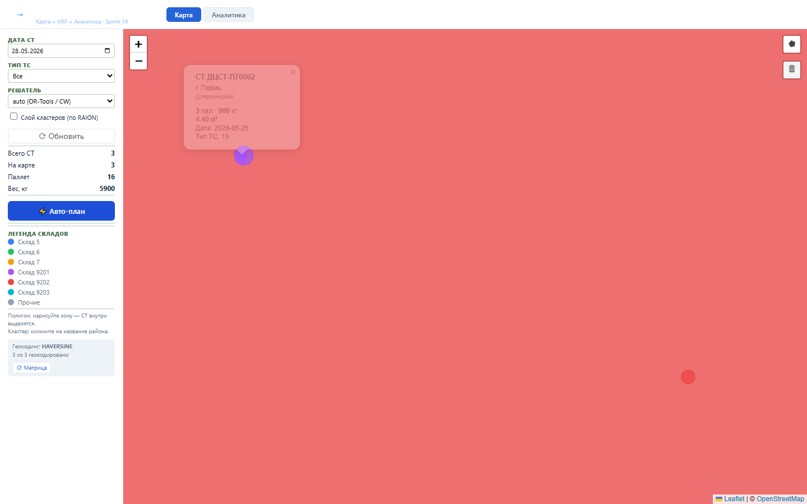
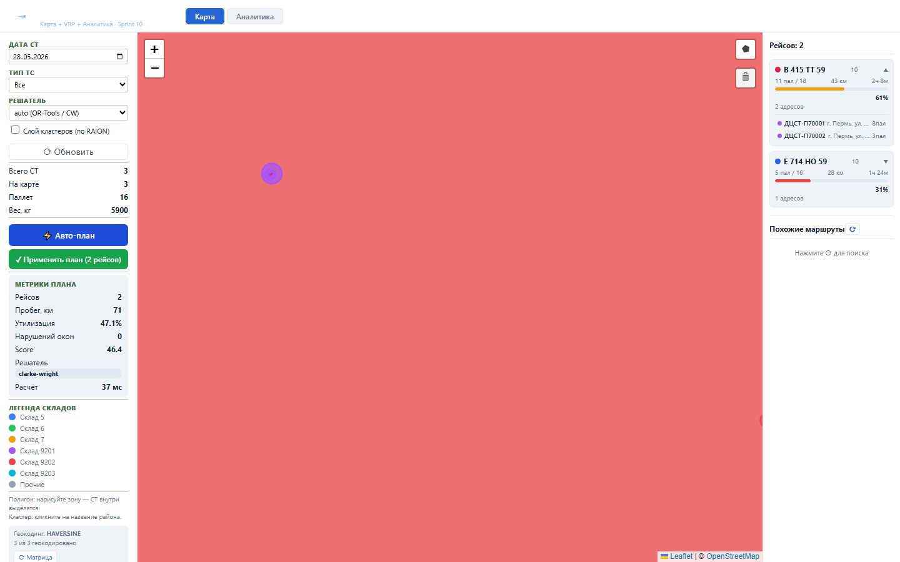
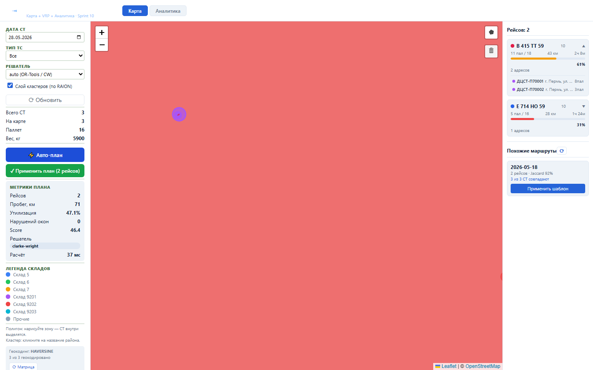
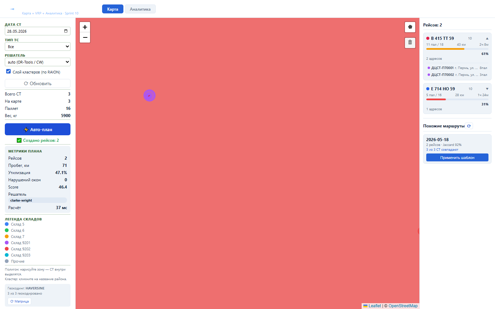
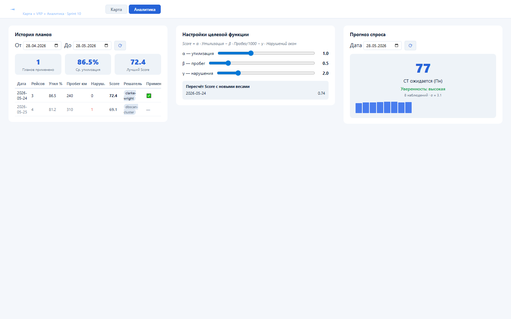

Зачем этот блок
Block II превращает список СТ в географическую картину дня: диспетчер видит точки на карте, запускает VRP-оптимизатор, получает маршруты по машинам, применяет план и анализирует качество планирования.
Вход
СТ с адресами, координатами, паллетами, весом, типом ТС и временными окнами.
СТ с адресами, координатами, паллетами, весом, типом ТС и временными окнами.
Процесс
Карта заказов, матрица расстояний, VRP, кластерный solver, исторические шаблоны.
Карта заказов, матрица расстояний, VRP, кластерный solver, исторические шаблоны.
Результат
План рейсов с маршрутами, метриками, утилизацией, применением и аналитикой.
План рейсов с маршрутами, метриками, утилизацией, применением и аналитикой.
Структура данных
| Объект | Поля | Источник |
|---|---|---|
| Заказ на карте | ST_NUMBER, LAT/LON, PALLETS_COUNT, TRANSPORT_TYPE, TW_STRICT, UNLOAD_NORM_MIN | RRL_SBORKA_PALLETS, RRL_ADDR |
| Матрица расстояний | FROM_ADDR, TO_ADDR, DISTANCE_KM, DURATION_MIN, SOURCE | RRL_ADDR_DISTANCE_MATRIX |
| VRP-план | PLAN_DATE, SOLVER, SCORE, PAYLOAD, APPLIED_AT | RRL_PLANNER_PLANS |
Как работать






Бизнес-процессы
- Географическая оценка дня: открыть карту, проверить количество СТ на карте, адреса без координат и требования к ТС.
- Расчет расстояний: пересчитать матрицу расстояний по активному routing provider, сохранить пары адресов в Oracle.
- Автопланирование: запустить VRP solver, получить набор рейсов с остановками, пробегом, загрузкой и нарушениями временных окон.
- Ручная корректировка: включить кластеры, выделять районы, смотреть похожие исторические маршруты и применять подходящий шаблон.
- Применение плана: создать рейсы из утвержденного плана, не превращая partial-success в success.
- Аналитика качества: сравнить планы по Score, утилизации, пробегу и прогнозу числа СТ.
Результат проверки
Block II Sprint 7-10 прошёл fresh hardening gate: functional 62 passed, 1 skipped, UI smoke Sprint 7-10 passed, load NFR Sprint 7-10 passed. Единственный backend skip — отсутствие historical-plan Oracle fixture для шаблонов Sprint 9.